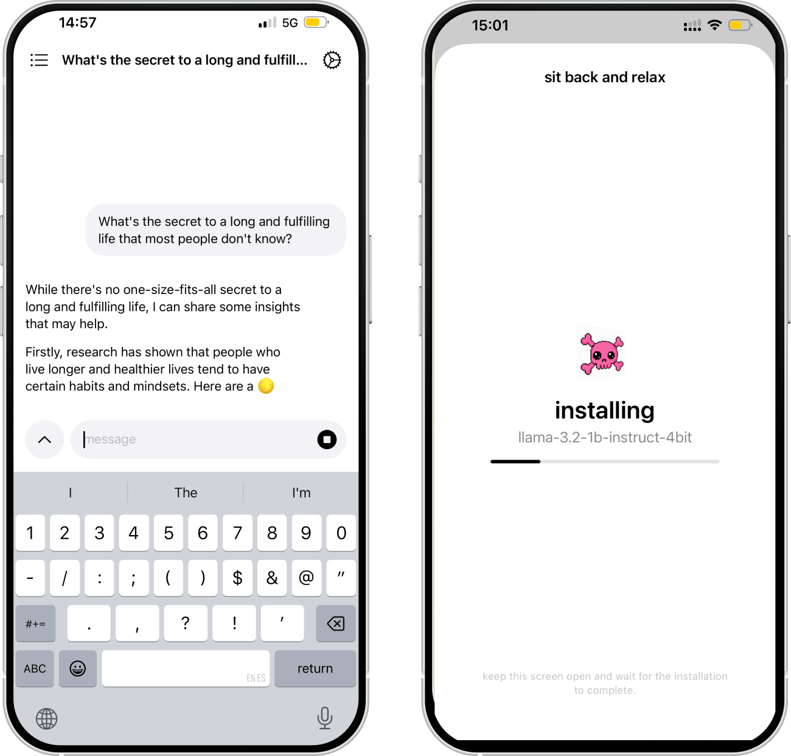

Pinku
Private AI chat that runs entirely on your iPhone or Mac. No account, no server, and it works offline.
Free to download. Optional one-time Pinku Pro, no subscription.
Download on the App StoreWhat it does
- The model runs on your devicePinku runs open language models locally with Apple's MLX framework. You download a model once; after that, no answer needs the network.
- Nothing to sign up for, nothing uploadedNo account and no server. Chats are files on your device, and deleting one deletes the file.
- Twelve open modelsGemma 3, Gemma 3n, Llama 3.2, Qwen3, DeepSeek-R1 distills, SmolLM3 and LFM2, from 0.34 GB to 4.7 GB. The default is Gemma 3 1B (0.73 GB), chosen because it handles languages other than English well.
- No crash when a model is too bigModels too large for your device are hidden, and before loading one Pinku checks the memory actually free. If it does not fit, you get a warning and the current model stays loaded.
- Regenerate, edit, shareRegenerate the last answer, edit a message you sent and rerun from there, copy or share any message, or share the whole conversation as plain text.
- In your languageThe interface is in English, Spanish, German, French, Japanese, Korean, Simplified Chinese and Russian.
- iPhone, iPad and MacThe same app on all three. Requires a device with Metal 3; on Mac, Apple silicon.
Free and Pro
| Free | Pinku Pro | |
|---|---|---|
| Models up to 1 GB: Qwen3 0.6B, LFM2 1.2B, Llama 3.2 1B, Gemma 3 1B (default), Qwen3 1.7B, DeepSeek-R1 Distill Qwen 1.5B | Yes | Yes |
| Models over 1 GB: SmolLM3 3B, Llama 3.2 3B, DeepSeek-R1 Distill Qwen 1.5B 8-bit, Qwen3 4B, Gemma 3n E2B, Qwen3 8B | No | Yes |
| Chat, regenerate, edit, copy and share | Yes | Yes |
| Custom instructions | No | Yes |
| Voice dictation, recognised on the device (never sent to a server) | No | Yes |
| Read answers aloud with the voices installed on the device | No | Yes |
Pinku Pro is a one-time in-app purchase, $9.99 on the US App Store (local prices vary), with Restore Purchases. No subscription. Models you had installed before Pro existed stay usable without it.
Who it is for
People who want an assistant for things they would rather not type into a cloud service: health questions, money, work drafts, journaling. And people who need one without a connection, on a plane or where cloud assistants are not available.
If you need the strongest possible answers, web search or image understanding, a cloud assistant will do better. A 1 to 5 GB model on a phone is clearly weaker, has a shorter context, and its speed depends on your device. We compared Pinku with the other offline AI apps, including where they beat us, in Best offline AI chat apps for iPhone and Mac.
Questions
Does Pinku work offline?
Yes. You download a model once, over the network. After that every answer is generated on your iPhone or Mac and no connection is needed.
Are my conversations sent anywhere?
No. There is no account and no server. Chats are stored on the device, and deleting one deletes the file. The network is used only to download models and for App Store purchases.
Is Pinku free?
It is free to download, and the six models up to 1 GB, including the default Gemma 3 1B, work without paying. Pinku Pro is an optional one-time purchase ($9.99 on the US App Store; local prices vary). There is no subscription.
What does Pinku Pro unlock?
The six larger models (SmolLM3 3B, Llama 3.2 3B, DeepSeek-R1 Distill Qwen 1.5B 8-bit, Qwen3 4B, Gemma 3n E2B and Qwen3 8B), custom instructions, voice dictation that runs on the device, and read aloud with the voices installed on the device. Chat, regenerate, edit and share are not part of Pro.
I already had a large model installed before Pinku Pro existed. Do I lose it?
No. Models installed before Pro arrived stay usable without buying it, and so do custom instructions you had already written.
Will a big model crash my iPhone?
Pinku hides models that are too large for your device's memory, and before loading any model it checks the memory actually available. If it does not fit, Pinku tells you and keeps the current model loaded instead of crashing.
Do my chats sync between iPhone and Mac?
No. There is no cloud, so each device keeps its own chats. You can share a conversation as plain text if you want to move it.
Is it as good as ChatGPT?
No. A model of 1 to 5 GB running on a phone is clearly weaker than a frontier cloud model, has a shorter context, cannot browse the web and does not read images. Its advantage is that nothing you type leaves the device.
Pinku is made by Saga Labs, an independent app studio. Built on Apple's MLX Swift.